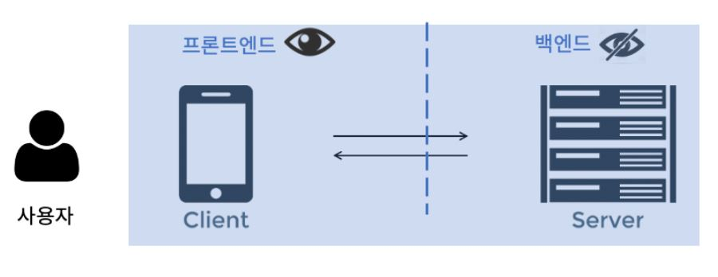
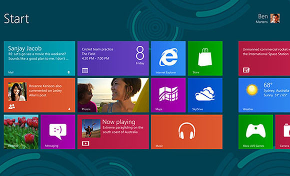

Pc에서 사용하는 C++언어와 모바일에서 사용하는 Java 언어가 합쳐져 있기 때문에 웹브라우저나 모바일 앱과 같은 프론트엔드에서 요청을 받아 처리하고, DB나 외부 API와 같은 리소스에 접근하고 결과를 프론트엔드에 전달하는 서버측의 로직.
웹 프레임워크를 사용할 수 있기 때문에 다양한 서브 프레임워크를 제공하고 백엔드 로직을 구현하는데 유용하다.

윈도우 운영체제에서 실행되는 데스크톱 애플리케이션을 개발할 수 있다. C#은 WPF(WinForms Presentation Foundation)이나 UWP(Uinversal Windows Platform)와 같은 UI 프레임워크를 사용하여 윈도우 앱을 개발할 수 있다.
웹브라우저에서 동작하는 웹페이지나 웹 애플리케이션을 개발하는 것을 의미. c#언어는 Blazor라는 웹 프레임 워크를 통해 웹 어셈블리로 컴파일되어 브라우저에서 실행될 수 있다. Blazor는 C#코드를 사용하여 프론트엔드와 백엔드를 함께 개발할 수 있는 장점이 있음.

Unity 게임 엔진을 통해 2D 및 3D 게임을 개발할 수 있다. 다양한 플랫폼에서 동작하는 게임을 만들 수 있게 해주며, 게임의 로직과 기능을 구현할 수 있다.